OneSliders events
All
Browse major world events by date, category and location.
Title
Year
Category
Region
Country
Level
Categories0 events
Map spreadEvents by continent
CalendarEvents per year
No events match these filters.
January 2026
TechnologyAWS re:Invent
TechnologyComputex Taipei

TechnologyDockerCon
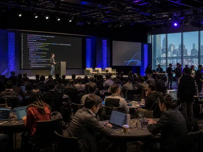
TechnologyGitHub Universe
TechnologyGoogle Pixel Launch
TechnologyIFA Berlin

TechnologyMeta Connect
TechnologyMicrosoft Surface Event
TechnologyMobile World Congress
TechnologyNintendo Direct Showcase
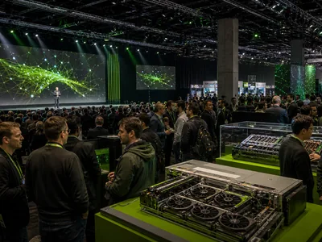
TechnologyNVIDIA GTC
TechnologyRed Hat Summit

TechnologySalesforce Dreamforce
TechnologySamsung Galaxy Unpacked
TechnologySony State of Play
April 2026
May 2026
June 2026
CultureMilan Fashion Week
CultureBET Awards
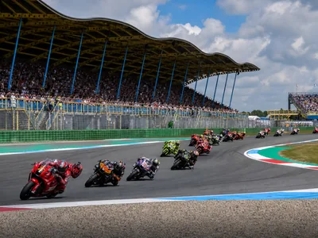
MotorDutch TT Assen
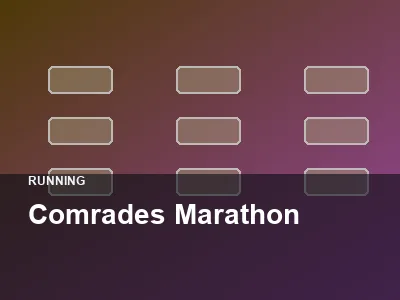
SportComrades Marathon
CultureArt Basel

FestivalFesta Junina
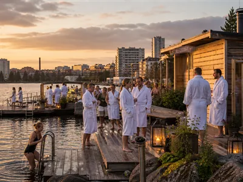
WellnessTampere Sauna Week
TechnologyMicrosoft Build
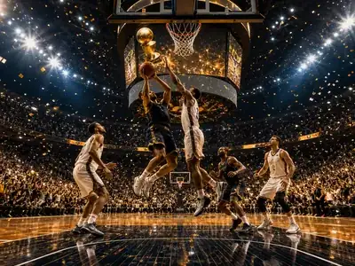
SportNBA Finals
MusicFes Festival of World Sacred Music
Motor SportMonaco Grand Prix
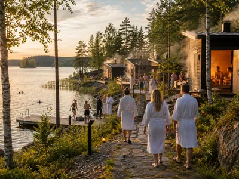
WellnessSauna Region Week
TechnologyApple WWDC
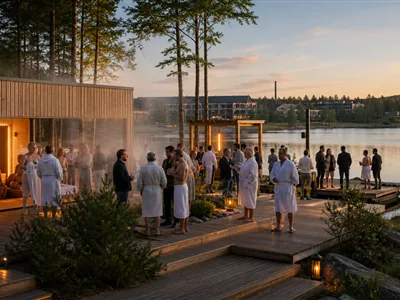
WellnessWorld Sauna Forum
SportFIFA World Cup
FestivalQueenstown Winter Festival
SportKLPGA Oslo Ladies Open
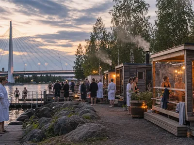
WellnessTuira Sauna Festival
CultureBali Arts Festival
Motor SportLe Mans 24 Hours
CultureInti Raymi
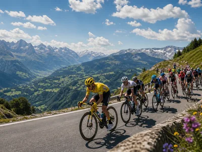
SportTour de France
SportWimbledon
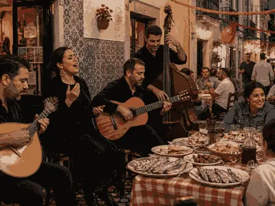
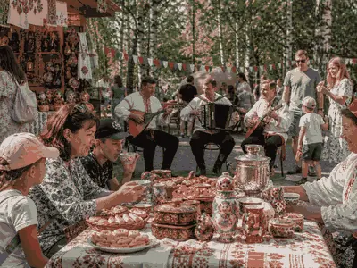
National DayRussia Day
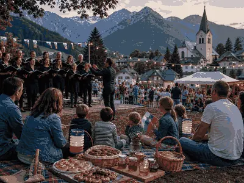
July 2026
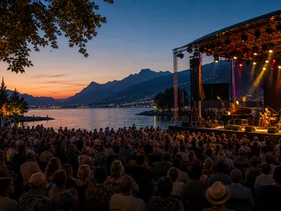
CultureMontreux Jazz Festival
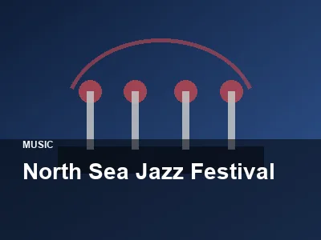
CultureNorth Sea Jazz Festival
CultureJapan Expo Paris
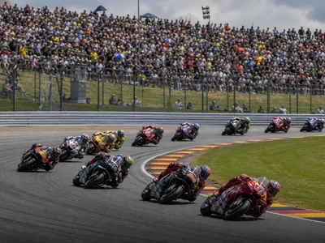
MotorGerman MotoGP
CultureAnime Expo
MotorGoodwood Festival of Speed
NatureGreat Migration
Motor SportBritish Grand Prix
FestivalCalgary Stampede
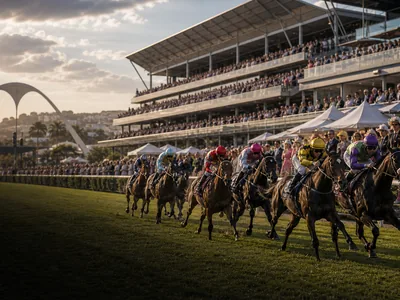
SportDurban July
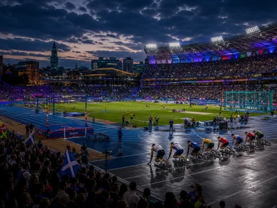
SportCommonwealth Games
FestivalTomorrowland 2026
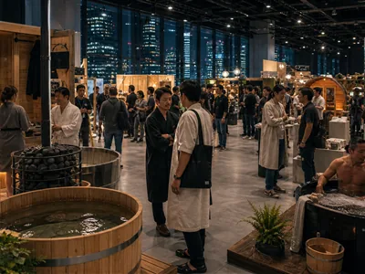
WellnessJapan Sauna Fair

CultureComic-Con International 2026
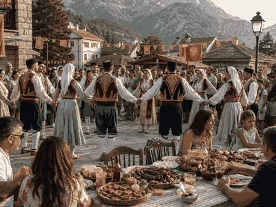
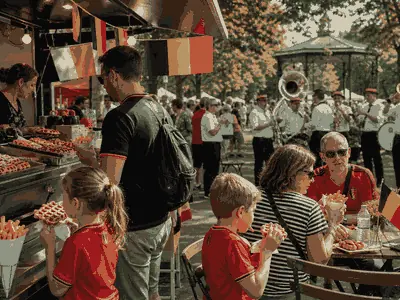
August 2026
CultureCopenhagen Fashion Week
FestivalNotting Hill Carnival
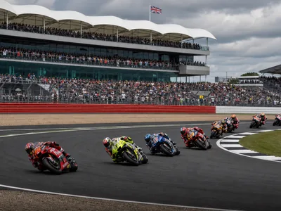
MotorBritish MotoGP
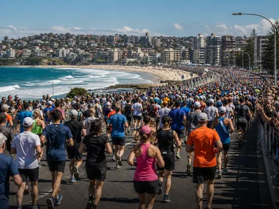
SportCity2Surf Sydney
FestivalMedellín Flower Festival

SportBledisloe Cup
FestivalBuenos Aires Tango Festival
FestivalØya Festival
SportSydney Marathon
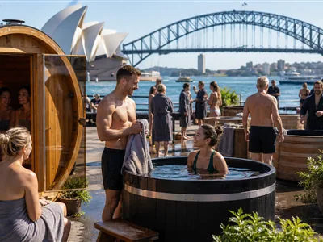
WellnessAustralia Sauna & Cold Plunge Festival
SportUS Open Tennis
CultureGamescom 2026
CultureVenice Film Festival
FestivalBurning Man
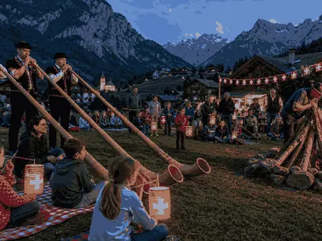
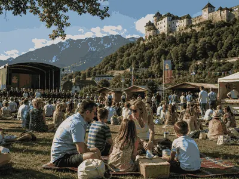
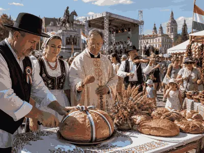
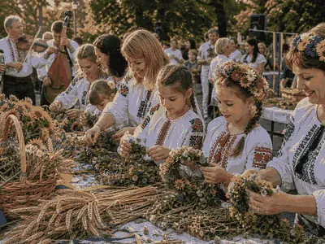
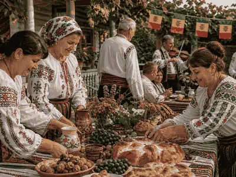
September 2026
CulturePAX West
CultureMTV Video Music Awards
CultureEmmy Awards
CultureDragon Con
SportSolheim Cup 2026
CultureNew York Fashion Week
CultureLondon Fashion Week
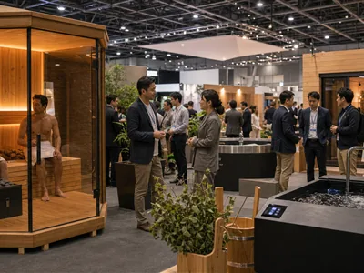
WellnessSauna & Wellness Expo Japan
FestivalRock in Rio
NatureKwita Izina
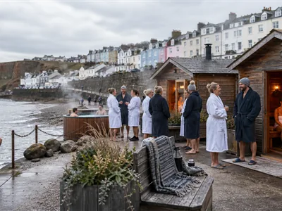
WellnessBritish Sauna Week
SportGreat North Run
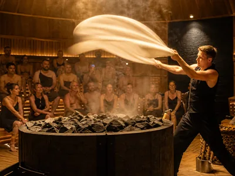
WellnessAufguss WM

SportAsian Games 2026
FestivalOktoberfest
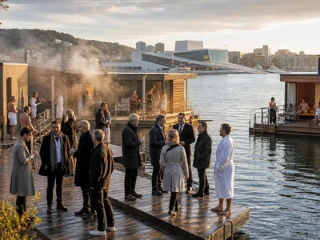
WellnessInternational Sauna Congress
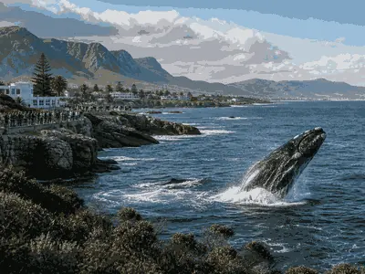
NatureHermanus Whale Festival
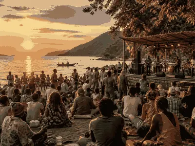
FestivalLake of Stars Festival

Motor SportMotoGP Japan

SportAFL Grand Final
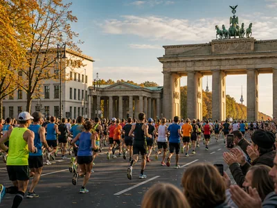
SportBerlin Marathon 2026
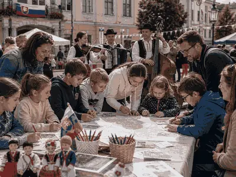
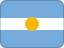
National DayBrazil Independence Day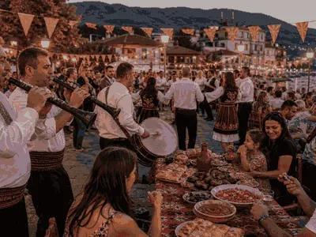
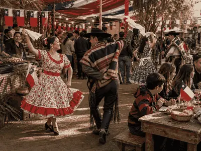
National DayChile Fiestas Patrias
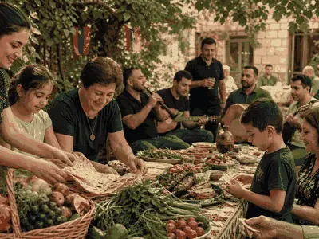
October 2026
CultureParis Games Week
CultureLucca Comics and Games
CultureMCM Comic Con London
CultureNew York Comic Con
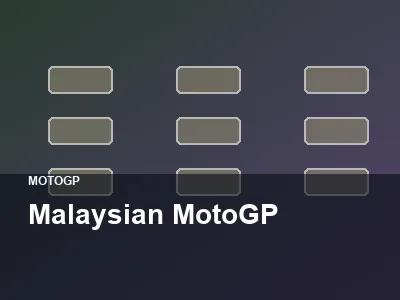
MotorMalaysian MotoGP
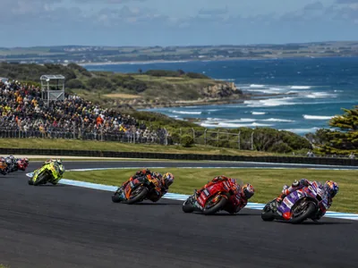
MotorAustralian MotoGP
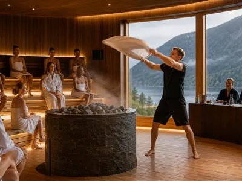
WellnessModern Classic Cup
SportNRL Grand Final
Wellnessinterbad Sauna Forum

FestivalOktoberfest Blumenau
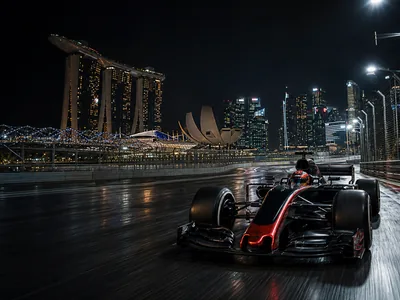
Motor SportSingapore Grand Prix
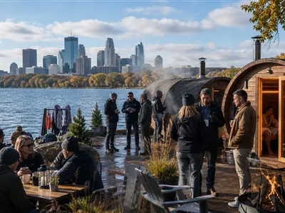
WellnessNorth American Sauna Summit

SportCape Town Marathon

CultureDiwali 2026
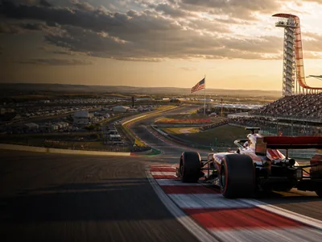
Motor SportUnited States Grand Prix

SportWorld Series 2026
Motor SportMexico City Grand Prix
November 2026

CultureDay of the Dead

SportNew York City Marathon
SportMelbourne Cup
CultureCairo International Film Festival
Motor SportSão Paulo Grand Prix
CultureSeoul Lantern Festival
WellnessSauna Herbal Cup
Motor SportLas Vegas Grand Prix
CultureYi Peng & Loy Krathong
CultureMarrakech Film Festival
Motor SportQatar Grand Prix
SportCopa Libertadores Final
December 2026
January 2027
SportAFL Anzac Day
SportAFL Brownlow Medal
SportAFL Dreamtime at the G
SportAFL Gather Round
SportAFL International Rules Series
SportAFL Opening Round
SportAFL Preliminary Finals
SportAFL Queen Birthday Clash
SportAFLW Grand Final
SportAfrican Games
MusicAmerican Song Contest
SportAmstel Gold Race
SportAmsterdam Marathon
SportArmy Navy Game
SportAsia Cup Cricket Final
SportATP Finals
CultureBAFTA Film Awards
SportBasketball Africa League Finals
MotorBathurst 1000
MusicBenidorm Fest
CultureBerlin International Film Festival
CultureBiennale of Sydney
SportBig Bash League Final
SportBillie Jean King Cup Finals
SportBolder Boulder
CultureBrasil Game Show
SportBreeders Cup
CultureBrit Awards
CultureBusan International Film Festival
SportCaribbean Series
FestivalCarnaval de Quebec Night Parade
FestivalCarnival of Santa Cruz de Tenerife
MusicCeltic Connections
CultureCesar Awards
SportChampions Hockey League Final
SportCheltenham Gold Cup
NatureCherry Blossom Wildlife Season
SportChicago Marathon
CultureChinaJoy
CultureChinese New Year
CultureChristmas Midnight Mass Vatican
FestivalCoachella
SportCollege Football Playoff National Championship
SportCollege World Series
FestivalCologne Carnival
SportCotton Bowl Classic
CultureD23 Expo
MotorDakar Rally
SportDavis Cup Finals
MotorDaytona 500
CultureDreamHack Dallas
CultureDubai Fashion Week
FestivalDubai Food Festival
TechnologyDublin Tech Summit
CultureEaster in Jerusalem
CultureEGX London
MusicEssaouira Gnaoua Festival
SportEuroLeague Final Four
SportEuropean Championships
SportEuropean Rugby Champions Cup Final
CultureFan Expo Canada
MusicFestival au Desert
MusicFestival da Cancao
SportFIBA Women's Basketball World Cup
CultureFrieze London
CultureFrieze New York
FestivalFuji Rock Festival

FestivalFuji Rock Festival
NatureGalapagos Wildlife Season
TechnologyGITEX Global
WellnessGlobal Running Day
WellnessGlobal Wellness Day
MusicGlobalFEST New York
CultureGolden Globe Awards
NatureGreat Barrier Reef Coral Spawning
SportGreat Ethiopian Run
FestivalHarbin Ice and Snow Festival
CultureHoli Festival
SportHome Run Derby
SportICC Champions Trophy
FestivalIce Magic Lake Louise
WellnessInternational Day of Yoga
SportInvictus Games
SportJapan Cup
SportJapan Series
MusicJunior Eurovision Song Contest
SportKentucky Derby
SportKHL Gagarin Cup Final
FestivalKiruna Snow Festival
SportKorean Series
CultureKumbh Mela
FestivalLa Tomatina
SportLiege Bastogne Liege
SportLittle League World Series
CultureLocarno Film Festival
FestivalLollapalooza Brazil
FestivalLollapalooza Chicago
TechnologyLondon Tech Week
NatureMasai Mara Calving Season
CultureMawazine Festival
MusicMawazine Rabat
FestivalMelbourne Food and Wine Festival
MusicMelodifestivalen
SportMemorial Cup
MusicMGP Norway
SportMiami Open Tennis
SportMilan San Remo
SportMLB All-Star Game
NatureMonarch Butterfly Migration
MotorNASCAR Championship Race
WellnessNational Trails Day
SportNBA All-Star Game
SportNBA Draft
SportNBA In-Season Tournament Final
SportNCAA Final Four
SportNCAA March Madness Selection Sunday
CultureNew Orleans Jazz and Heritage Festival

SportNew York City Marathon
SportNFL Draft
SportNFL Kickoff Game
SportNHL All-Star Weekend
FestivalNice Carnival
CultureObon Festival
SportOpening Day MLB
SportOrange Bowl
SportPakistan Super League Final
SportPan American Games
CultureParis Fashion Week
SportParis Marathon
SportParis Roubaix
CulturePAX East
SportPeachtree Road Race
FestivalPizzafest Naples
NaturePolar Bear Week Churchill
SportPremiership Rugby Final
FestivalPrimavera Sound
FestivalPrimavera Sound Barcelona
SportPrix de l Arc de Triomphe
SportPro Bowl Games
MotorQatar MotoGP
FestivalQuebec Winter Carnival

FestivalQuebec Winter Carnival
MusicRainforest World Music Festival
MotorRally Monte Carlo
CultureRamadan Nights Dubai
FestivalRio Carnival
TechnologyRISE Asia
SportRose Bowl Game
CultureRoskilde Festival
FestivalRoskilde Festival
FestivalRoskilde Festival
SportRoyal Ascot
SportRugby League World Cup Final
FestivalSalon du Chocolat Paris
FestivalSan Sebastian Gastronomika
FestivalSapporo Snow Festival
NatureSardine Run South Africa
MusicSauti za Busara
MotorSebring 12 Hours
CultureSemana Santa Seville
CultureSeoul Fashion Week
CultureShanghai Fashion Week
FestivalSingapore Food Festival
TechnologySlush Helsinki
CultureSongkran Festival
MotorSpanish MotoGP
SportSpengler Cup
SportStrade Bianche
SportSugar Bowl
CultureSundance Film Festival
SportSuper Rugby Final
TechnologySXSW Interactive
SportSydney Marathon
CultureSziget Festival
FestivalSziget Festival Budapest
FestivalTaste of Chicago
TechnologyTechCrunch Disrupt
CultureTEFAF Maastricht
CultureThaipusam
SportThe Ashes
CultureThe Game Awards
SportThe Hundred Final
MusicThe Voice Finale
CultureTokyo Fashion Week
CultureTokyo Game Show
SportTokyo Marathon
FestivalTomorrowland
CultureTony Awards
CultureToronto International Film Festival
SportTour of Flanders
CultureTribeca Festival
FestivalTrinidad Carnival
FestivalTromso Northern Lights Festival
SportTwo Oceans Marathon
SportUCI Road World Championships
MusicUdaipur World Music Festival
SportUEFA Conference League Final
SportUEFA Europa League Final
FestivalUltra Music Festival
MusicUna Voce per San Marino
SportUnited Rugby Championship Final
CultureUp Helly Aa
SportValencia Marathon
CultureVenice Biennale Arte
FestivalVenice Carnival
CultureVesak Day
TechnologyVivaTech Paris
SportVuelta a Espana
TechnologyWeb Summit Lisbon
FestivalWhite Turf St Moritz
SportWinter Classic
SportWNBA Finals
MusicWOMAD Charlton Park
CultureWOMADelaide
SportWomen Cricket World Cup Final
SportWorld Baseball Classic
ClimateWorld Environment Day
ClimateWorld Glacier Day
SportWorld Junior Ice Hockey Championship
WellnessWorld Mental Health Day
ClimateWorld Ranger Day
ClimateWorld Reef Day
SportWorld University Games
WellnessWorld Wellness Weekend
SportWTA Finals
SportYouth Olympic Games
TechnologyCES

SportAFC Asian Cup 2027
SportAustralian Open 2027
February 2027
SportIndian Wells Masters
CultureGrammy Awards 2027
SportSix Nations Championship 2027
WellnessEuropean Sauna Marathon 2027
CricketICC T20 World Cup 2027
American FootballSuper Bowl LXI
WellnessCanadian Sauna Culture Weekend 2027
National DayKosovo Independence Day
March 2027

April 2027

May 2027
MotorIsle of Man TT
CricketIPL Final 2027

TennisRoland-Garros 2026

CultureMet Gala

MusicEurovision Song Contest

SportIIHF World Championship / Hockey VM

ReligionHajj 2027

MotorsportIndianapolis 500 2027
May 2027
June 2027
September 2027
October 2027
May 2028
June 2028
July 2028
February 2030
January 2099
ClimateWildfire Community Preparedness Day
TechnologyCES
FestivalMontreux Jazz Festival
FestivalSalzburger Festspiele
MusicSanremo Music Festival
TechnologyApple September Event
SportSony Open in Hawaii
SportThe American Express
SportFarmers Insurance Open
SportHilton Grand Vacations Tournament of Champions
SportLIV Golf Riyadh
SportWM Phoenix Open
SportAT&T Pebble Beach Pro-Am
SportLIV Golf Adelaide
SportGenesis Invitational
SportHonda LPGA Thailand
SportCognizant Classic
SportHSBC Women's World Championship
SportArnold Palmer Invitational
SportBlue Bay LPGA
SportLIV Golf Hong Kong
SportPuerto Rico Open
SportLIV Golf Singapore
SportThe Players Championship
SportFortinet Founders Cup
SportLIV Golf South Africa
SportValspar Championship
SportFord Championship presented by Wild Horse Pass
SportTexas Children's Houston Open
SportAramco Championship
SportValero Texas Open
SportMasters Tournament
SportJM Eagle LA Championship presented by Plastpro
SportLIV Golf Mexico City
SportRBC Heritage
SportThe Chevron Championship
SportZurich Classic of New Orleans
SportCadillac Championship
SportMexico Riviera Maya Open at Mayakoba
SportLIV Golf Virginia
SportMizuho Americas Open
SportONEflight Myrtle Beach Classic
SportTruist Championship
SportKroger Queen City Championship presented by P&G
SportPGA Championship
SportCJ Cup Byron Nelson
SportCharles Schwab Challenge
SportLIV Golf Korea
SportShopRite LPGA powered by Wakefern
SportLIV Golf Andalucia
SportMemorial Tournament
SportU.S. Women's Open presented by Ally
SportDow Championship
SportRBC Canadian Open
SportMeijer LPGA Classic for Simply Give
SportU.S. Open Golf
SportKPMG Women's PGA Championship
SportLIV Golf Louisiana
SportTravelers Championship
SportJohn Deere Classic
SportAmundi Evian Championship
SportGenesis Scottish Open
SportISCO Championship
SportCorales Puntacana Championship
SportThe Open Championship
Sport3M Open
SportISPS Handa Women's Scottish Open
SportLIV Golf UK
SportAIG Women's Open
SportRocket Classic
SportLIV Golf New York
SportWyndham Championship
SportFedEx St. Jude Championship
SportThe Standard Portland Classic
SportBMW Championship
SportCPKC Women's Open
SportLIV Golf Indianapolis
SportFM Championship
SportLIV Team Championship Michigan
SportTour Championship
SportBiltmore Championship Asheville
SportWalmart NW Arkansas Championship presented by P&G
SportBank of Utah Championship
SportLOTTE Championship presented by Hoakalei
SportBaycurrent Classic
SportBuick LPGA Shanghai
SportBMW Ladies Championship
SportButterfield Bermuda Championship
SportMaybank Championship
SportVidantaWorld Mexico Open
SportTOTO Japan Classic
SportWorld Wide Technology Championship
SportGood Good Championship
SportThe ANNIKA driven by Gainbridge at Pelican
SportCME Group Tour Championship
SportRSM Classic
TechnologyComputex Taipei
TechnologyComputex Taipei
MotorItalian MotoGP
MotorItalian MotoGP
MotorFrench MotoGP
MotorFrench MotoGP
SportGiro d Italia
SportGiro d Italia
CultureCannes Film Festival
CultureCannes Film Festival
SportIndian Premier League Final
SportIndian Premier League Final
WellnessNordic Sauna Summit
WellnessNordic Sauna Summit
SportChampions League Final
SportChampions League Final
WellnessTampere Sauna Week
WellnessTampere Sauna Week
TechnologyMicrosoft Build
TechnologyMicrosoft Build
MusicFes Festival of World Sacred Music
MusicFes Festival of World Sacred Music
Motor SportMonaco Grand Prix
Motor SportMonaco Grand Prix
WellnessNational Trails Day
WellnessNational Trails Day
TennisRoland-Garros 2026
TennisRoland-Garros 2026
SportSony Open in Hawaii
SportSony Open in Hawaii
SportThe American Express
SportThe American Express
SportFarmers Insurance Open
SportFarmers Insurance Open
SportHilton Grand Vacations Tournament of Champions
SportHilton Grand Vacations Tournament of Champions
SportLIV Golf Riyadh
SportLIV Golf Riyadh
SportWM Phoenix Open
SportWM Phoenix Open
SportAT&T Pebble Beach Pro-Am
SportAT&T Pebble Beach Pro-Am
SportLIV Golf Adelaide
SportLIV Golf Adelaide
SportGenesis Invitational
SportGenesis Invitational
SportHonda LPGA Thailand
SportHonda LPGA Thailand
SportCognizant Classic
SportCognizant Classic
SportHSBC Women's World Championship
SportHSBC Women's World Championship
SportArnold Palmer Invitational
SportArnold Palmer Invitational
SportBlue Bay LPGA
SportBlue Bay LPGA
SportLIV Golf Hong Kong
SportLIV Golf Hong Kong
SportPuerto Rico Open
SportPuerto Rico Open
SportLIV Golf Singapore
SportLIV Golf Singapore
SportThe Players Championship
SportThe Players Championship
SportFortinet Founders Cup
SportFortinet Founders Cup
SportLIV Golf South Africa
SportLIV Golf South Africa
SportValspar Championship
SportValspar Championship
SportFord Championship presented by Wild Horse Pass
SportFord Championship presented by Wild Horse Pass
SportTexas Children's Houston Open
SportTexas Children's Houston Open
SportAramco Championship
SportAramco Championship
SportValero Texas Open
SportValero Texas Open
SportJM Eagle LA Championship presented by Plastpro
SportJM Eagle LA Championship presented by Plastpro
SportLIV Golf Mexico City
SportLIV Golf Mexico City
SportRBC Heritage
SportRBC Heritage
SportThe Chevron Championship
SportThe Chevron Championship
SportZurich Classic of New Orleans
SportZurich Classic of New Orleans
SportCadillac Championship
SportCadillac Championship
SportMexico Riviera Maya Open at Mayakoba
SportMexico Riviera Maya Open at Mayakoba
SportLIV Golf Virginia
SportLIV Golf Virginia
SportMizuho Americas Open
SportMizuho Americas Open
SportONEflight Myrtle Beach Classic
SportONEflight Myrtle Beach Classic
SportTruist Championship
SportTruist Championship
SportKroger Queen City Championship presented by P&G
SportKroger Queen City Championship presented by P&G
SportCJ Cup Byron Nelson
SportCJ Cup Byron Nelson
SportCharles Schwab Challenge
SportCharles Schwab Challenge
SportLIV Golf Korea
SportLIV Golf Korea
SportShopRite LPGA powered by Wakefern
SportShopRite LPGA powered by Wakefern
SportLIV Golf Andalucia
SportLIV Golf Andalucia
SportMemorial Tournament
SportMemorial Tournament
SportU.S. Women's Open presented by Ally
SportU.S. Women's Open presented by Ally